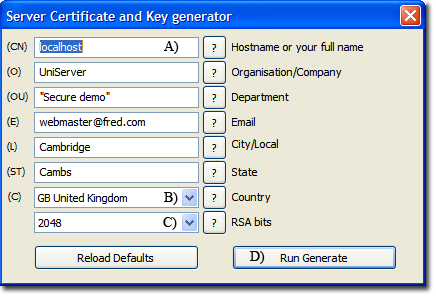

|
|
Apache - SSL |
Secure Sockets Layer (SSL) offers privacy for client-server communication. SSL establishes an encrypted tunnel using cryptography algorithms and keys through which other protocols such as HTTP are transported.
By default, The Uniform Server Zero installation has SSL disabled, for the reason of security. A certificate/key pair are required and must be unique to the particular server. After creating a new server certificate/key pair, SSL is automatically enabled in Apache's configuration file.
How to Enable SSL
After generating a self-signed certificate, SSL is automatically enabled. The "Server Certificate and Key generator" form has been pre-configured for a self-signed certificate and there is no need to change these values. Just click "Run Generate".
Please note, however, that a self-signed certificate is not considered secure. Your browser will most likely complain about it. Nevertheless, it is fine for local testing, and you can set an override for most browsers.
For the case of a production server environment, DO NOT USE a self-signed certificate, since it will not be accepted by your users.
|
Apache > Apache SSL > Server Certificate and Key generator
The above generates a self-signed certificate. Note 1: A) If you have changed the server name using Apache configuration menu, that name will be displayed instead of localhost. Note 2: B) C) Are dropdown menus. Note 3: C) 2048 Bits provide high-grade encryption; no need to change this. |
 |
After generating a self-signed certificate the following configuration changes are made:
Apache configuration file changes
Both php_openssl.dll and ssl.conf are enabled as follows:
- Apache configuration file: UniServerZ\core\apache2\conf\httpd.conf
- Existing line: #LoadModule ssl_module modules/mod_ssl.so
- Changed to: LoadModule ssl_module modules/mod_ssl.so
|
The above change in turn enables httpd-ssl.conf via this block |
<IfModule ssl_module> # Secure (SSL/TLS) connections Include conf/extra/httpd-ssl.conf </IfModule> |
Background
The following provides an overview of SSL and background information on how SSL is implemented on The Uniform Server Zero. This section can be skipped.
SSL Overview
The following outlines the SSL process with respect to a client. A Client is generally a user's browser. Let's assume your web-site server has the registered domain fred.com
- A client makes a connection to fred.com on the SSL port (standard port is 443) by typing https://fred.com into their browser. Note the use of https instead of http. On connecting to web server, the client provides a list of available ciphers it can use.
- The Server picks the strongest cipher that both understand and support. The Server sends back a certificate with its name and public encryption key, signed by a trusted Certificate Authority.
- The Client checks the certificate with the CA. Browsers have a collection of CAs stored locally. These are checked first, avoiding the need to directely contact the CA, and thus speeding up the process.
- If the certificate is approved, the Client sends back a random number encrypted with the server's public key. This Number is unique to the client and can only be decrypted by the server using its private key.
- The Server and the Client use this random number to generate encrypted packets. Both Client browser and Server now communicate using encryption and all transactions are secured. The browser displays the secure icon.
IP addresses and SSL
An SSL certificate is bound to your fully qualified domain name, which is encrypted into the certificate. Modern browsers send the server name identification (SNI) along with a request. Apache can use this in Vhosts to resolve certificates.
Unfortunately IE remains in the dark ages and expects servers to resolve using IP addresses. If you attempt to have more than one SSL certificate associated with the same IP address you will get undesired results. The bottom line: to appease IE, you are restricted to using a single Apache SSL Vhosts name.
SSL Virtual Host
Generating a self-signed certificate enables the SSL Virtual Host configuration file. You can now access your server using either http or htpps; when using https all transactions are encrypted.
Using https incurs a small speed penalty so generally a web-site is accessed using http and not https. If a user comes in on http and that linked resource requires https, it is forced (switched) to https. You can define a folder (ssl root folder) to specifically use only https.
The Uniform Server is pre-configured to run both a secure server (on port 443) and a regular server (on port 80). These are separated using VirtualHosts, which has the advantage of maintainability.
To highlight this separation, a default Server installation has a user configuration button View ssl pre-assigned to it. By default this button is greyed out and enabled only after a server certificate is generated. It then allows the secure folder's index page to be viewed in a browser. Note that you can re-assign this user button.
Default Virtual Host - Configuration
Configuration file: UniServerZ\core\apache2\conf\extra\httpd-ssl.conf
#=========================================================
# File name: httpd-ssl.conf
# Created By: The Uniform Server Development Team
# Edited Last By: Mike Gleaves (ric)
# Apache HTTP server configuration file.
# V 1.0 15-3-2013
#=========================================================
#################### Global SSL ##########################
Listen ${AP_SSL_PORT} https
#== Some MIME-types for downloading Certificates and CRLs
AddType application/x-x509-ca-cert .crt
AddType application/x-pkcs7-crl .crl
#== Pass Phrase Dialog:('builtin' is a internal terminal dialog)
SSLPassPhraseDialog builtin
#== Inter-Process Session Cache:
SSLSessionCache shmcb:logs/ssl_scache(512000)
SSLSessionCacheTimeout 300
#== Pseudo Random Number Generator (PRNG):
SSLRandomSeed startup builtin
SSLRandomSeed connect builtin
########### SSL Virtual Host ############################
<VirtualHost _default_:${AP_SSL_PORT}>
ServerName ${US_SERVERNAME}
DocumentRoot ${US_ROOTF_SSL}
ServerAdmin you@example.com
ErrorLog logs/error_ssl.log
TransferLog logs/access_ssl.log
#== SSL Engine Switch:
SSLEngine on
SSLOptions +StrictRequire
#== SSL Cipher Suite:
SSLProtocol -all +TLSv1 +SSLv3
SSLCipherSuite HIGH:MEDIUM:!aNULL:+SHA1:+MD5:+HIGH:+MEDIUM
#== Server Certificate:
SSLCertificateFile ${US_ROOTF}/core/apache2/server_certs/server.crt
#== Server Private Key:
SSLCertificateKeyFile ${US_ROOTF}/core/apache2/server_certs/server.key
#== StartSSL certificate chain for class 1 certificates
# Disable when using a self-signed certificate
# Enable remove # disable add #
#SSLCertificateChainFile ${US_ROOTF}/core/apache2/server_certs/sub.class1.server.ca.pem
#SSLCACertificateFile ${US_ROOTF}/core/apache2/server_certs/ca.pem
SSLVerifyClient none
SSLProxyEngine off
#== Server Root folder:
<Directory "${US_ROOTF_SSL}">
AllowOverride All
Require all granted
SSLRequireSSL
</Directory>
#== Most problems of broken clients are related to the HTTP
# keep-alive facility. Disable keep-alive for those clients.
SetEnvIf User-Agent ".*MSIE.*" \
nokeepalive ssl-unclean-shutdown \
downgrade-1.0 force-response-1.0
</VirtualHost>
|
General notes:
Note 1: Enviroment path variable ${US_ROOTF} is automatically updated to match the server location. Note 2: The root folder path is set by enviroment variable ${US_ROOTF_SSL} this is portable if assigned folder is below the main root folder UniServerZ. If assigned ouside of the main root folder the installation is fixed and the servers no longer portable. |
Certificates and signing request (CSR) location
The Uniform Server uses OpenSSL to generate:
- A self-signed certificate and server key.
- Or a server key and certificate signing request.
OpenSSL and supporting files are located in folder UniServerZ\core\openssl.
Note: To view installed server certificate details, run UniServerZ\core\openssl\View_cert_details.bat
Server certificates are located or copied to folder UniServerZ\core\apache2\server_certs
A default installation pre-installs the required intermediate certificate for StartSSL ca.pem and sub.class1.server.ca.pem
Where to next
Self-signed Self-signed test certificate details.
Free server certificate Howto obtain and install StartSSL free server certificate